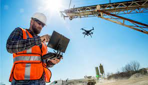

Future technology in construction refers to the use of emerging technologies to enhance the building process, improve the quality of construction and make it more efficient.
Building Information Modeling 
BIM is a digital representation of a building that is used to plan, design, construct, and manage the building throughout its lifecycle. BIM can be used to create detailed 3D models of the building and its systems, allowing architects, engineers, and construction professionals to collaborate and identify potential issues before construction begins.
3D Printing 
3D printing technology can be used to create complex architectural designs and building components, such as walls, flooring, and roofing. This technology can also be used to print complete building structures, including homes, bridges, and other structures.
Drones and Robotics 
Drones and robotics can be used to survey construction sites, inspect buildings, and perform dangerous tasks such as welding, painting, and demolition. They can also be used to transport materials to hard-to-reach areas, and to perform precision tasks such as laying bricks and installing drywall.
Augmented & Virtual Reality 
AR and VR can be used to visualize building designs, provide training for construction workers, and simulate construction scenarios. This technology can also be used to provide virtual tours of buildings to potential buyers or renters.
Smart Buildings 
Smart building technology can be used to make buildings more energy-efficient and sustainable, by integrating IoT devices, such as sensors and actuators, to monitor and control building systems such as lighting, heating and cooling, and security.
Prefabrication And Modular Construction 

Prefabrication and modular construction can be used to construct building components off-site and then transport them to the construction site to be assembled. This technology can be used to speed up the construction process and reduce waste and labor costs.
Automation & Artificial Intelligence
Automation and AI can be used to optimize the construction process, such as scheduling and resource management, and to improve the quality of construction by identifying potential issues before they become problems.
These technologies can make the construction process more efficient, accurate, and sustainable, and improve the quality of buildings and infrastructure. The use of these technologies can also help to reduce construction time and costs, and improve the safety and productivity of the construction workers.